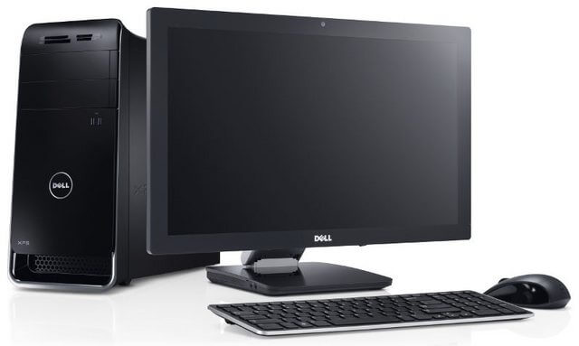
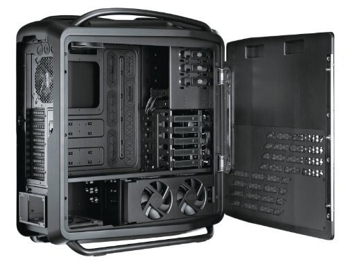
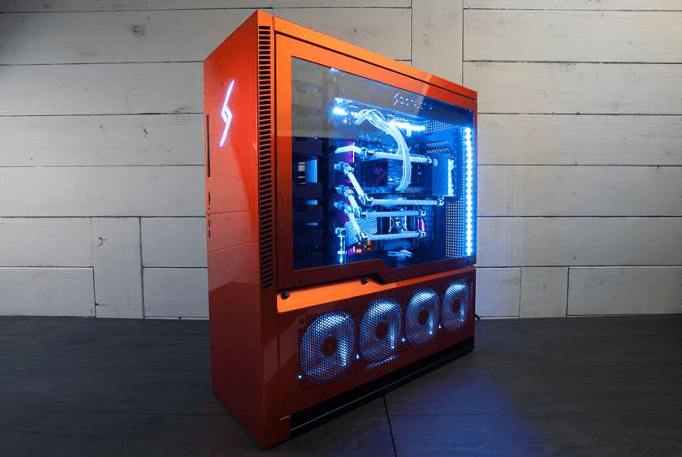
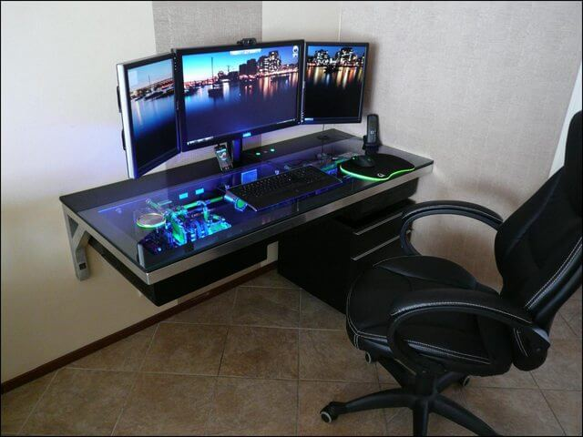
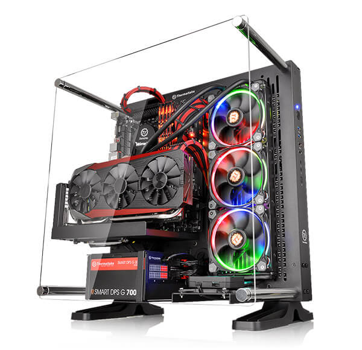
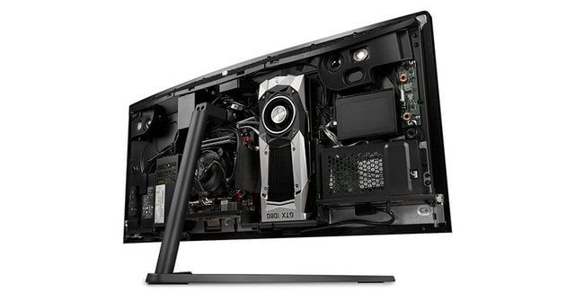
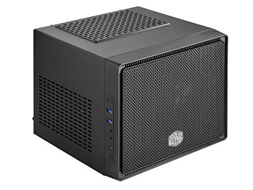
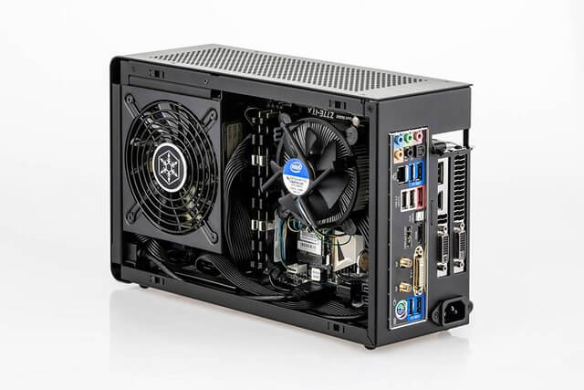
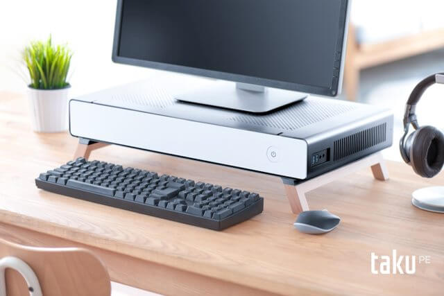
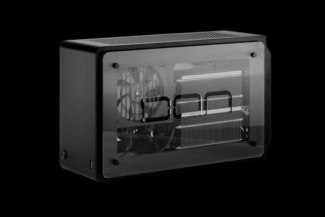

Mini PCs Will Replace Desktops
( 6 min read )
A safe prediction, no?
Its not very hard to believe that all traditional Full/Mid Tower sized PCs or “desktops” will be replaced by SFF (small form factor) or Mini Tower PCs sooner or later. These SFF computers are the size of a loaf of bread or a shoebox; instead of the cabient sized monsters that people have today. I’d like to call those PCs… “deskbottoms” if they sit under your desk because they’re too large.
SFF computers still use full-size or common PC parts. Excluding a few with custom power supply units. And SFF is different from, say your smartphone, which has an embedded pc or SoC (system on-a chip) that does not have inter-changeable parts.
No, the Desktop isn’t dead. Its just getting smaller.
Traditional “sit-on-your-desk” PCs, or desktops, have been around for a long time. The IBM PC model 5150 was released in 1981. Since then there have been numerous types of personal computers released, but more importantly the technological disruptions in the desktop market such as the release of laptops, PDAs, tablets, and smartphones. There is so much happening at once! But the enthusiast PC user, power-user, CGI artist, video gamer, and more, are still holding on to their powerful desktop computer. The desktop PC is still a useful tool that fulfills a purpose to them (myself included!) Even if it seems unwieldly large or non-portable.
Enough Room for Everyone
Arguably, we have more options and consumer choices than ever. We have tall, short, thin, light, powerful, RGB colored, ultra silent, and many more varieties in between. Seems like we have as many different PC varieties as there are different dog breeds. There is enough room for everyone to find their favorite PC.

Mid Tower - A very common size for PCs right now.

Full Tower - Slightly taller than mid and shorter than super.

Super Tower - Larger than a mini fridge.

Desk Computer - Literally a computer built into a desk. Brings a whole new meaning to desktop!

Open case - Honestly one of the craziest looking computers out there.

AIO (all in one) - Where a full computer is packed inside of the monitor.

Cube or Mini Tower - About as small as two shoeboxes side-by-side.

SFF- About the size of a shoebox or loaf of bread.

PC Monitor Stand - A new-ish entry in the market. Still impressively small.
As consumers, we have lots of choices for our device shapes and sizes. But you got to admit… its easy to see why smaller computers are taking over some of the market share. Those giant desktop computers will still have their place, but they’re just not as common-folk friendly.
Let’s say hypothetically, your parents, or a friend is looking to buy a new desktop computer. (Which chances are slim with all the smartphones/tablets going around but stay with me.) Then knowing you as the “techie” they’ll proabably ask you for advice. So would you recommend the full or super tower PC? The regular mid-tower? Or will you recommend a smaller more nimble, more portable PC?
Small Form Factor will prevail
That’s why I’m betting that for power users, gamers, and the like; Mini PCs will be their replacement computer in the next few years. They won’t be buying yet another Full/Mid Tower PC. It might take 5-6 more years but mark my words… Its coming!
SFF is relatively niche but its beginning to get noticed by more than the usual. Several brands have started announcing smaller computer cases for PC builders like myself in the last couple years. (Fractal, Cougar, Bitfenix, Lian Li, and more.) And there are more crowd-funded projects than I thought. (DAN, Ghost, NCase, and TAKU) Even Jeff Atwood blogged several times about his HTPC (home theater pc), which is pretty much a SFF PC. But for viewing media, movies, music, and streaming, all packed under your TV or home theater system. SFF is definitely growing in popularity.

DAN A4 SFX PC case. (Photo Credit: DAN Cases)
I backed a Kickstarter project for a $350+ SFF PC case. Its called the DAN A4-SFXv2. Its absolutely awesome and I’m really excited to build a new computer in one. Its as small as you can get with full-size components such as an Intel Core i7 cpu and Nvidia GTX 1080 graphics card. All that power packed into a shoebox. It boggles the mind sometimes.
I hope to receive mine sometime January 2018 (as DAN indicated in their campaign). By that time, I’ll move over to Linux and drop Windows. I’ll also look forward to saving space under my computer desk. I would like to lower my electric bill with more eco-friendly parts, but that depends entirely on what I put inside my new build. I’ll reveal what I build in the next year (hopefully). Look for it sometime February 2018.
Until then, I’ve got to make the most of my large, inapt, desktop PC.
Published: May 30, 2017
Category: predictions